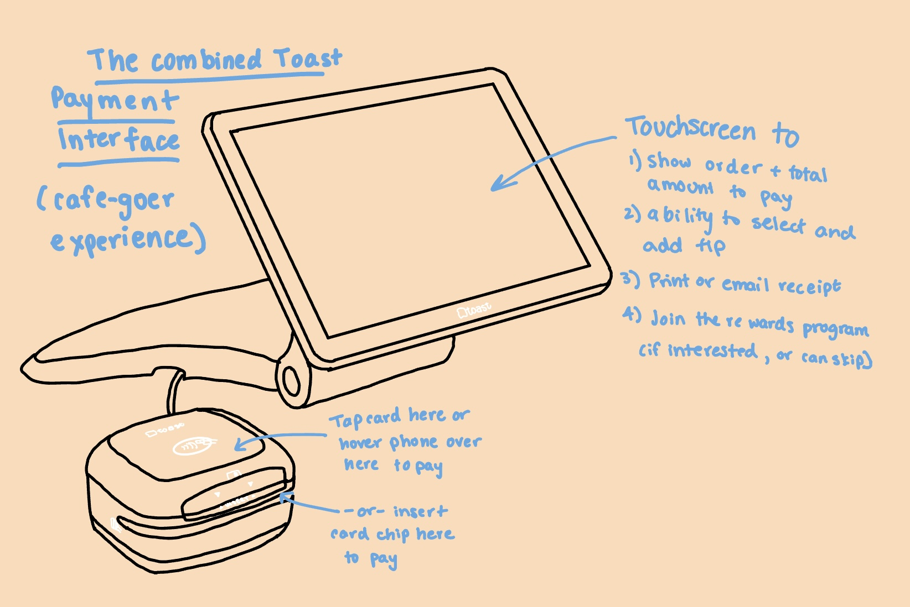

Part 1: Preparation
What is the interface?
The interface I have selected is the Toast Point of Sale (POS) Platform at Charuma Tea Bar on Weybosset Street, Providence.
Why the Toast Platform?
In most cafes, there are multiple ways cafe-goers pay for their drinks or snacks. I, for instance, tend to use my iPhone Apple Pay method but other cafe-goers use their card chip, tap, or swipe capabilities. There are also capabilities to view the order amount, add tip, join rewards programs, and receive the receipt that adds to the user experience when paying for a drink or snack at the cafe.
What questions did I ask?
Below are some questions I asked individuals that I interviewed:
- How did you pay for your Charuma drink or snack?
- Can you walk through your experience paying, starting from the second after you made your order?
- What did you interact with first? What did you interact with last?
- How was the experience interacting with the touchscreen of the payment system?
- Was there any aspect of the touchscreen experience that was confusing to you? If so, what and why?
- What did you expect to see on the touchscreen? What appeared that you did not expect?
- How was the experience interacting with the chip/touch aspect of the payment scanner?
- Why did you select your iPhone (or card) to pay for your order?
- What motivated you to select your iPhone (or card) to pay for your order?
- Was there any aspect of the scanner that confused you? If so, what and why?
What does the interface look like?
Here is a brief description of the interface with the annotated (in blue) components:
What does the sketch describe?
The interface sketched is the Toast POS System, specifically the part that the cafe-goer interacts with when ordering. Cafe-goers (or users) start by...
- Viewing their order on the touchscreen.
- Tapping their card, inserting the card chip, or using a contactless device like a phone with the payment scanner that is attached to the system.
- Go back to the touch screen to:
- Add a tip
- Select how to recieve the reciept
- Join a rewards program if interested
What are the problems the interface solves?
- Make payments easier than handing over cash or a card to the employee.
- Faster and more efficent payment method.
- Not contact-heavy method (only the touch screen).
- Overall, simplify is the payment experience.